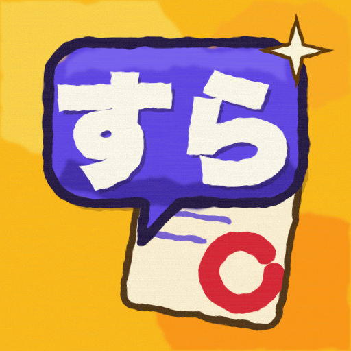

앱

소개
CHIEUN Studio는 혼자 공부하는 사람이 지치지 않고 계속할 수 있도록, 작고 정직한 학습 앱을 만드는 개인 개발 스튜디오예요.
첫 번째 앱 「술술 일본어」는 일본어 시험(JLPT)을 준비하거나 일본어를 처음 시작하는 분을 위해 만들었어요. 틀린 부분이나 이상한 설명을 발견하면 언제든 알려 주세요. 앱을 고치는 데 가장 큰 도움이 돼요.
문의
앱 문의, 오류 신고, 개인정보 삭제 요청
CHIEUN Studio는 언어 공부를 매일 조금씩 이어 갈 수 있게 돕는 작은 학습 도구를 만들어요.

CHIEUN Studio는 혼자 공부하는 사람이 지치지 않고 계속할 수 있도록, 작고 정직한 학습 앱을 만드는 개인 개발 스튜디오예요.
첫 번째 앱 「술술 일본어」는 일본어 시험(JLPT)을 준비하거나 일본어를 처음 시작하는 분을 위해 만들었어요. 틀린 부분이나 이상한 설명을 발견하면 언제든 알려 주세요. 앱을 고치는 데 가장 큰 도움이 돼요.